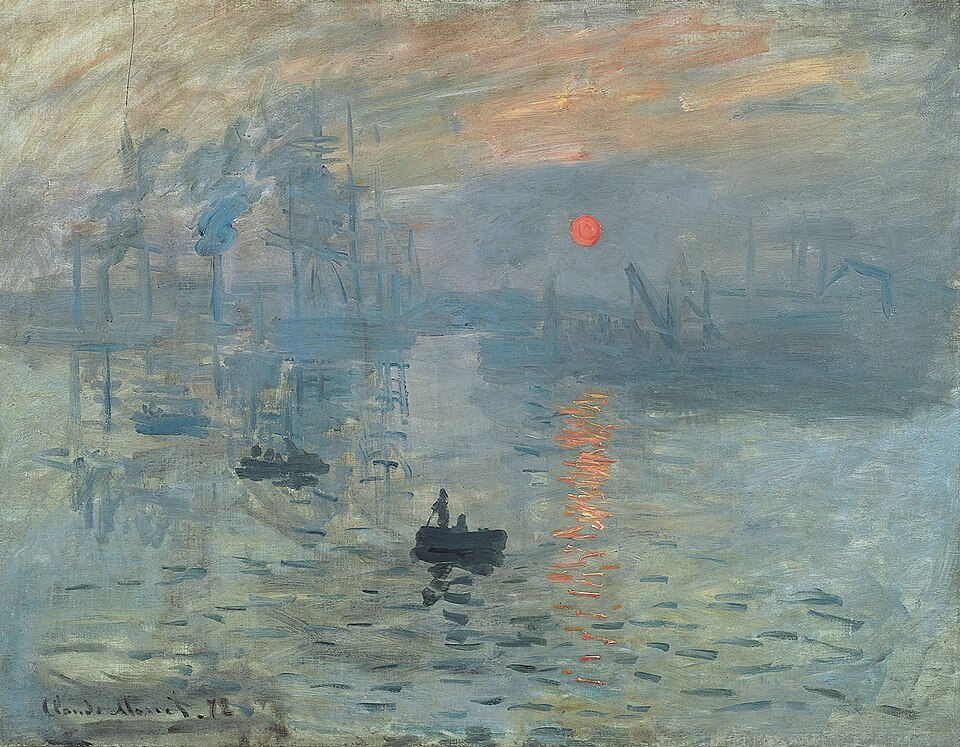
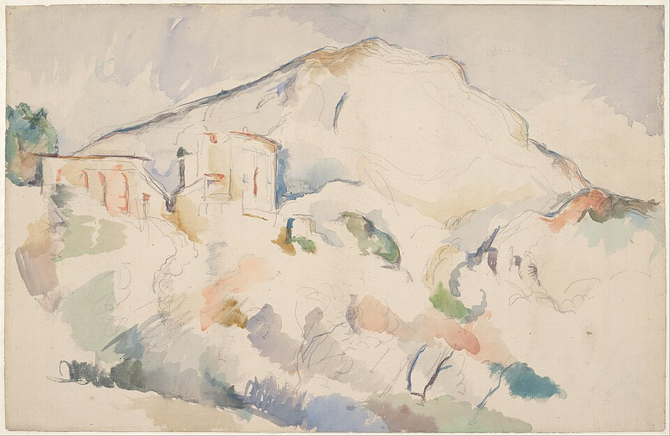
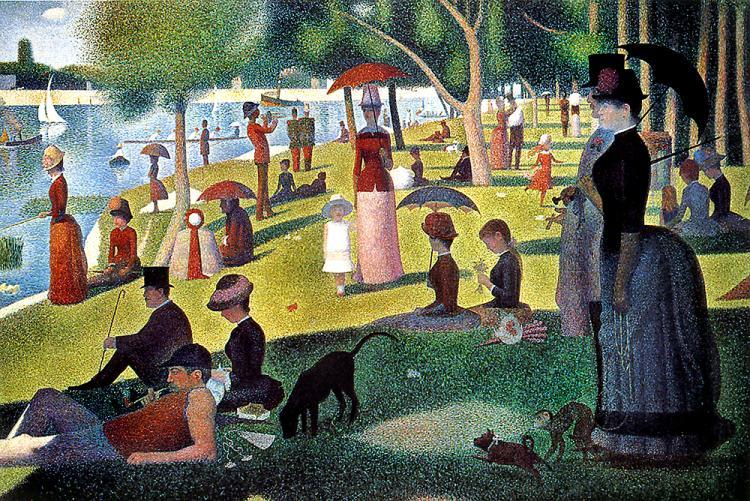
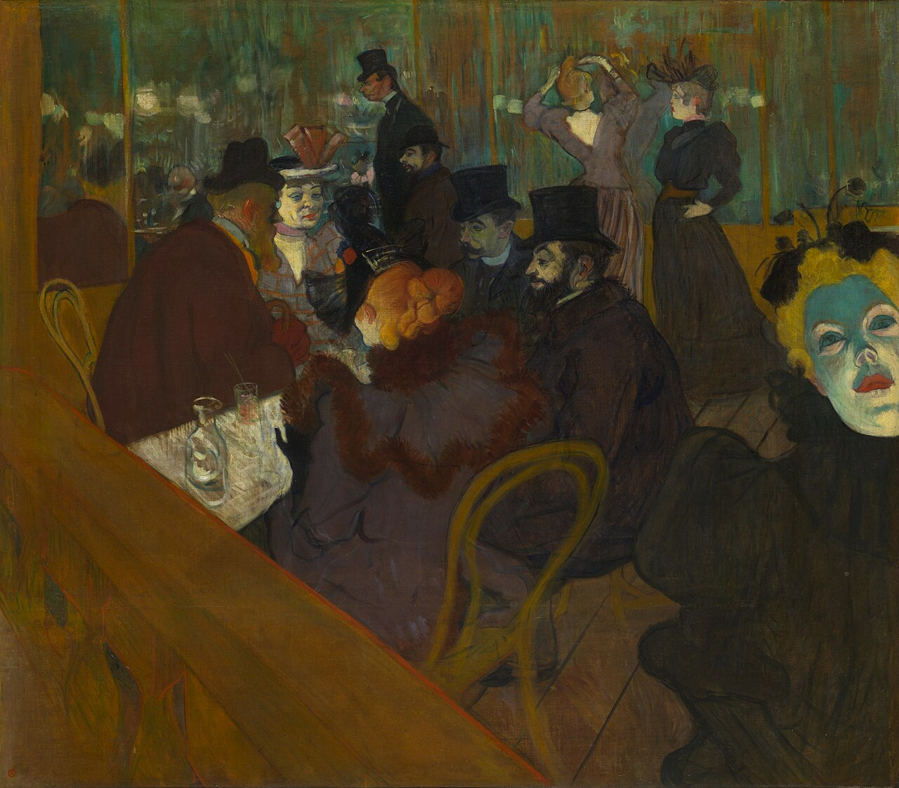
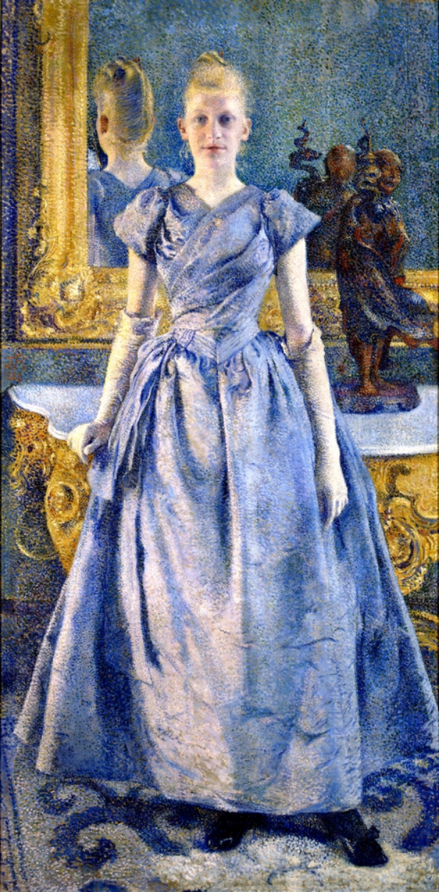
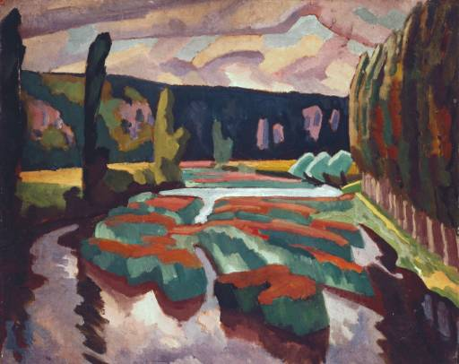

0. 먼저 결론 — 후기 인상주의는 무엇을 바꾸었는가?
인상주의는 빛과 순간의 시각 경험을 혁신적으로 다루었지만, 다음 세대는 그것이 형태·감정·상징·지적 질서를 충분히 설명하지 못한다고 보았다.
01 · 세잔순간 → 구조
빛 때문에 흔들리는 세계 뒤에서 변하지 않는 형태와 공간의 질서를 다시 만들려 했다.
03 · 고갱관찰 → 상징
현실을 그대로 보는 대신 기억·신화·상징·비서구 문화에서 새로운 의미를 찾았다.
04 · 쇠라즉흥 → 체계
자유로운 붓질을 색채 이론과 시각 과학에 근거한 질서로 바꾸려 했다.
05 · 공통점재현 → 구성
보이는 세계를 단순 복제하기보다 화가가 어떻게 다시 조직하느냐가 더 중요해진다.
가장 간단한 기억법:
인상주의: “지금 어떻게 보이는가?”
후기 인상주의: “본 것을 어떻게 다시 구성하고 의미화할 것인가?”
인상주의: “지금 어떻게 보이는가?”
후기 인상주의: “본 것을 어떻게 다시 구성하고 의미화할 것인가?”
1. Before — 인상주의가 도달한 곳
인상주의의 핵심 성취
- 고정된 사물보다 특정 순간의 빛과 대기를 그렸다.
- 윤곽선을 약화시키고 분절된 붓질로 시각의 떨림을 표현했다.
- 현대의 항구, 기차역, 거리, 카페와 여가를 주요 주제로 만들었다.
- 색은 사물의 고유색이 아니라 주변 빛에 따라 변하는 것으로 다루었다.
모네의 질문은
“이 장면이 지금 이 순간 눈에 어떻게 보이는가?”였다.
“이 장면이 지금 이 순간 눈에 어떻게 보이는가?”였다.
2. 그런데 왜 다음 세대는 인상주의에 불만을 느꼈는가?
| 인상주의의 강점 | 다음 세대가 느낀 한계 |
|---|---|
| 순간적인 빛 | 세잔: 빛이 계속 변하면 사물의 구조와 무게는 어디에 있는가? |
| 눈에 보이는 색 | 반 고흐: 눈에 보이는 색만으로 인간의 감정을 충분히 표현할 수 있는가? |
| 현대생활의 관찰 | 고갱: 보이는 현실보다 기억·신화·상징이 더 중요한 진실일 수도 있지 않은가? |
| 자유로운 붓질 | 쇠라: 감각적 즉흥을 더 체계적이고 과학적인 색채 질서로 만들 수 있지 않은가? |
그래서 후기 인상주의는 인상주의를 부정한 운동이 아니라,
인상주의가 열어 놓은 자유를 각자 다른 방향으로 밀어붙인 운동들의 집합이라고 보는 것이 정확하다.
3. 후기 인상주의의 네 방향
폴 세잔
① 구조
자연을 원통·구·원뿔처럼 단순화하며 회화 안에 다시 안정된 구조를 구축한다.
폴 고갱
③ 상징
기억·종교·신화·비서구 문화에서 상징적이고 비현실적인 색과 형태를 찾는다.
조르주 쇠라
④ 과학적 색채
작은 색점과 보색 대비를 체계적으로 배열하여 시각 혼합을 계산한다.
4. 세잔 — 인상주의의 흔들리는 세계에 다시 뼈대를 세우다

구조의 후기 인상주의
폴 세잔, 《생트빅투아르 산》
여러 시기에 반복 제작한 연작 가운데 하나5. 반 고흐 — 색은 더 이상 눈에 보이는 현실만을 말하지 않는다

감정의 후기 인상주의
빈센트 반 고흐, 《별이 빛나는 밤》
1889 · 뉴욕 현대미술관눈으로 본 밤하늘인가, 느낀 밤하늘인가?
- 하늘은 실제 천문 현상의 정확한 복제보다 소용돌이치는 에너지처럼 표현된다.
- 붓질 자체가 감정의 방향과 리듬을 만든다.
- 푸른 밤과 노란 별의 강한 색 대비가 화면의 정서를 결정한다.
- 형태는 현실을 설명하기 위해서가 아니라 감정을 전달하기 위해 변형된다.
인상주의가 “눈에 보이는 색”을 해방했다면,
반 고흐는 그 색을 “내가 느끼는 색”으로 바꾸었다.
반 고흐는 그 색을 “내가 느끼는 색”으로 바꾸었다.
이 방향은 20세기 표현주의에서 색과 형태를 감정 전달을 위해 과장·왜곡하는 태도로 이어진다.
6. 고갱 — 현실 관찰에서 기억·상징·신화로

상징의 후기 인상주의
폴 고갱, 《우리는 어디서 왔는가? 우리는 무엇인가? 우리는 어디로 가는가?》
1897–1898 · 보스턴 미술관고갱에게 중요한 것은 ‘보이는 대로’가 아니다
- 인물과 자연의 색은 실제 관찰보다 상징적·정서적으로 선택된다.
- 깊은 원근보다 넓고 평평한 색면이 화면을 구성한다.
- 하나의 순간보다 인간의 탄생·삶·죽음이라는 철학적 질문을 다룬다.
- 현실의 재현보다 기억·종교·신화·상징이 더 중요한 역할을 한다.
모네가 눈앞의 순간을 보았다면,
고갱은 눈에 보이지 않는 의미를 그리려 했다.
고갱은 눈에 보이지 않는 의미를 그리려 했다.
고갱의 타히티 작품은 오늘날 식민주의적 시선과 현지 문화를 유럽인의 환상 속에서 재구성한 문제까지 함께 검토해야 한다.
그의 작품을 단순히 “문명에서 벗어난 순수한 세계”의 발견으로 설명하는 것은 충분하지 않다.
7. 쇠라 — 인상주의의 색을 과학적 질서로 바꾸다

신인상주의 · 점묘
조르주 쇠라, 《그랑드자트섬의 일요일 오후》
1884–1886 · 시카고 미술관붓질은 자유롭지 않고 오히려 계산된다
- 작은 순색 점을 나란히 놓아 관람자의 눈에서 색이 혼합되도록 한다.
- 보색 대비와 색채 이론을 의식적으로 활용한다.
- 현대인의 여가라는 인상주의적 주제를 유지하지만 화면은 매우 정적이고 질서정연하다.
- 즉흥적으로 보이는 인상주의와 달리 긴 시간의 계획과 계산이 들어간다.
인상주의가 빛을 감각적으로 포착했다면,
쇠라는 그것을 분석하고 체계화하려 했다.
쇠라는 그것을 분석하고 체계화하려 했다.
엄밀히 말하면 쇠라와 시냐크는 흔히 신인상주의(Neo-Impressionism)로 별도 분류된다.
그러나 “인상주의 이후의 여러 반응”을 비교하는 교육적 맥락에서는 후기 인상주의와 함께 다루면 이해가 쉽다.
8. 네 화가를 직접 비교하면
| 비교 항목 | 세잔 | 반 고흐 | 고갱 | 쇠라 |
|---|---|---|---|---|
| 인상주의에 대한 불만 | 형태가 너무 흔들린다 | 감정이 충분하지 않다 | 의미와 상징이 부족하다 | 너무 즉흥적이다 |
| 핵심 가치 | 구조 | 감정 | 상징 | 체계 |
| 색 | 형태를 구축하는 색면 | 감정을 전달하는 강렬한 색 | 상징적·비현실적 색 | 색채 이론에 따른 순색 |
| 형태 | 단순화·기하학화 | 왜곡·리듬화 | 평면화·단순화 | 점과 엄격한 배열 |
| 공간 | 여러 시점과 구조적 공간 | 감정적으로 휘어진 공간 | 평면적이고 상징적인 공간 | 정적이고 계산된 공간 |
| 후대 영향 | 입체주의 | 표현주의 | 상징주의·야수주의 | 신인상주의·색채 이론 |
| 한 문장 | “세계를 다시 세운다.” | “세계를 느낀 대로 바꾼다.” | “세계를 의미로 바꾼다.” | “세계를 분석한다.” |
후기 인상주의는 한 방향이 아니라 20세기 현대미술로 갈라지는 교차로에 가깝다.
같은 인상주의에서 출발했지만 세잔은 입체주의로, 반 고흐는 표현주의로,
고갱은 상징주의·야수주의로, 쇠라는 신인상주의와 색채 이론의 계보로 이어진다.
9. After — 왜 후기 인상주의가 현대미술의 출발점처럼 보이는가?
르네상스 이후 서양 회화의 오랜 질문은 “세계를 얼마나 설득력 있게 재현할 것인가”였다. 인상주의는 그 재현을 순간적인 시각 경험으로 바꾸었고, 후기 인상주의는 더 나아가 화가는 현실을 그대로 재현할 필요가 없으며, 구조·감정·상징·이론에 따라 적극적으로 다시 만들 수 있다고 보여주었다.
후기 인상주의의 가장 큰 변화는
“보이는 세계를 어떻게 그릴까?”에서 “화가는 세계를 어떻게 새롭게 만들 수 있는가?”로 이동한 것이다.
“보이는 세계를 어떻게 그릴까?”에서 “화가는 세계를 어떻게 새롭게 만들 수 있는가?”로 이동한 것이다.
※ “후기 인상주의(Post-Impressionism)”라는 명칭은 이 화가들이 스스로 만든 그룹명이 아니다.
영국의 비평가 로저 프라이가 1910년 런던 전시에서 인상주의 이후 세대를 묶어 부르면서 널리 정착한 후대의 미술사적 명칭이다.
여러 국가에서의 전개 — 후기 인상주의는 ‘국가별 학파’보다 국제적 개인 실험에 가깝다
후기 인상주의는 하나의 조직이나 선언을 가진 운동이 아니라 인상주의 이후 서로 다른 화가들의 반응을 후대에 묶은 명칭이다. 따라서 국가별 분류보다 개인별 방향이 더 중요하다.
| 국가·지역 | 의미 | 대표 사례 |
|---|---|---|
| 프랑스·파리 | 세잔·고갱·쇠라 등 주요 실험이 파리 미술계와 프랑스 전시망 속에서 전개되었다. | 세잔, 고갱, 쇠라, 툴루즈로트렉 |
| 네덜란드 | 반 고흐는 네덜란드 출신이지만 결정적인 색채와 붓질의 혁신은 프랑스 아를·생레미 시기에 발전했다. 국가보다 이동과 네트워크가 중요함을 보여준다. | 빈센트 반 고흐 |
| 벨기에 | 신인상주의의 분할색과 상징적 경향이 강하게 수용되어 독자적인 현대미술로 발전했다. | 테오 판 리셀베르허, 제임스 엔소르(독자적 상징·표현 경향) |
| 영국 | 직접적인 ‘영국 후기 인상주의파’라기보다 로저 프라이가 1910년 전시를 통해 Post-Impressionism이라는 명칭을 정착시키며 영국 현대미술의 중요한 논쟁을 촉발했다. | 로저 프라이, 블룸즈버리 그룹의 수용 |
핵심: 후기 인상주의에서는 국가보다 세잔=구조, 반 고흐=감정, 고갱=상징, 쇠라=체계라는 개인별 문제의식이 더 중요한 분류 기준이다.
심화 보강 - 후기 인상주의의 네 갈래와 국제적 수용
후기 인상주의는 하나의 단일 화파가 아니라 인상주의 이후의 여러 반응을 묶는 이름이다. 순간의 빛을 해방한 뒤, 화가들은 다시 구조, 감정, 상징, 장식성, 과학적 색채, 도시의 심리로 나아갔다.
따로 HTML로 나누지 않은 내부 화파
- 세잔의 구조적 방향은 자연을 원통, 구, 원뿔 같은 기본 형태와 색면의 관계로 다시 세우려 했다. 이는 인상주의의 흔들리는 순간성을 부정하기보다, 그 위에 지속적인 질서를 찾는 시도였고 뒤의 입체주의로 이어졌다.
- 반 고흐의 표현적 방향은 색을 눈에 보이는 빛의 기록이 아니라 감정과 정신의 강도로 바꾸었다. 붓질은 표면을 채우는 흔적이 아니라 불안, 열망, 리듬, 생명력을 직접 드러내는 선이 되었다.
- 고갱과 퐁타벤파, 종합주의는 자연 관찰보다 기억, 상징, 평면적 색면, 굵은 윤곽을 중시했다. 브르타뉴와 타히티는 실제 장소이면서도 유럽 문명에 대한 비판과 원시성의 상상이라는 복잡한 문제를 품는다.
- 쇠라와 신인상주의는 인상주의의 색채를 감각적 즉흥에서 과학적 질서로 옮겼다. 점묘와 분할주의는 작은 색점이 눈에서 섞인다는 이론을 바탕으로, 현대인의 여가를 정적이고 계산된 화면으로 재구성했다.
- 툴루즈 로트레크와 나비파, 벨기에 신인상주의, 영국의 포스트 인상주의 수용은 후기 인상주의가 파리 주변만의 현상이 아니었음을 보여준다. 포스터, 카바레, 장식화, 비평과 전시 기획까지 모두 다음 모더니즘으로 가는 통로가 되었다.
국가별 발전 방식
- 프랑스에서는 파리와 남프랑스, 브르타뉴가 서로 다른 실험의 장소가 되었다. 세잔은 엑상프로방스의 풍경을 구조로 분석했고, 고갱은 퐁타벤과 타히티에서 상징과 평면성을 추구했으며, 로트레크는 몽마르트르의 밤 문화를 현대적 이미지로 만들었다.
- 네덜란드 출신 반 고흐는 프랑스에서 후기 인상주의의 언어를 급격히 발전시켰다. 파리에서 밝은 색채와 분할된 붓질을 접하고, 아를과 생레미에서 그것을 감정적 색채와 회오리치는 선으로 바꾸었다.
- 벨기에에서는 레뱅그트와 신인상주의 네트워크가 중요했다. 반 리셀베르허는 쇠라의 색채 분할을 초상과 지중해 풍경으로 확장했고, 앙소르는 가면, 군중, 풍자를 통해 상징주의와 표현주의로 이어지는 불안한 이미지를 만들었다.
- 영국에서는 로저 프라이가 1910년과 1912년 포스트 인상주의 전시를 기획하며 세잔, 고갱, 반 고흐 등을 새로운 회화의 기준으로 소개했다. 이 수용은 블룸즈버리 그룹과 영국 모더니즘에 큰 자극을 주었다.
- 후기 인상주의의 중요성은 다음 사조로 갈라지는 지점에 있다. 세잔은 입체주의, 고갱과 나비파는 상징주의와 장식적 모더니즘, 반 고흐는 표현주의, 쇠라는 색채 이론과 추상적 구성으로 이어졌다.
상단 도판에 없던 화가 대표작 카드
앞부분에서 이미 모네, 세잔, 반 고흐, 고갱, 쇠라를 보여주었으므로 마지막 카드는 표에는 나오지만 상단 도판이 없던 로트레크, 반 리셀베르허, 앙소르, 로저 프라이로 제한했다.


테오 반 리셀베르허
반 리셀베르허, 《알리스 세테의 초상》
1888, 개인 소장초상화의 피부와 옷, 배경이 작은 색점과 색면으로 조직된다. 벨기에 신인상주의는 쇠라의 과학적 색채 원리를 인물의 우아함과 장식적 리듬에 적용하며 국제적 확산을 보여준다.

제임스 앙소르
앙소르, 《1889년 브뤼셀에 입성하는 그리스도》
1888, 게티 미술관가면을 쓴 군중과 정치적 표어, 종교적 인물이 혼란스럽게 뒤섞인다. 앙소르는 인상주의 이후의 밝은 색채를 풍자와 불안, 군중 심리로 바꾸어 상징주의와 표현주의의 문을 연다.

로저 프라이
로저 프라이, 《포플러가 있는 강》
1912년경, 테이트프라이는 화가이면서 비평가와 전시 기획자로서 영국에 후기 인상주의를 소개했다. 이 풍경은 세잔 이후의 단순화된 형태와 색면을 받아들인 사례이며, 영국에서 포스트 인상주의가 이론과 실천을 함께 통해 수용되었음을 보여준다.